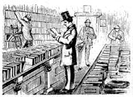

You can turn a love of books (and some knowledge of their worth) into a part-time business.
Have you ever wondered what the old books in that attic trunk are worth? And what about those dusty volumes on the top shelf of Grandma's pantry?
Books such as these just might bring in a tidy little sum. During my first year of college, while working in a public library, I became interested in old books-and in the market that exists for them. I discovered that getting the right book to the right person can be a profitable venture. And ever since, I've been making money in my spare time buying and selling old, rare, and out-of-print books to secondhand-book dealers-who, in turn, sell them to collectors, scholars, and people interested in reading on specific topics.
If you, too, have a fascination for old books, and if you have a bit of detective in you, you may have the makings for a profitable part-time home business. But first, you need to know what makes books valuable and who's willing to pay cash for them.
When you're talking in terms of collector-quality volumes, you can eliminate several categories right away: textbooks, old Bibles (they have sentimental value only), modern mass-market paperbacks, and book club selections. The latter are produced in such great quantities and with such inexpensive materials that most aren't worth more than a nickel or dime each, no matter where you buy or sell them (and no matter what some dealers may charge for them). A large number of such books might bring in a few dollars, but don't count on it.
Also, remember that just because a book is old, doesn't mean that it's valuable. Many books over 100 years old may be worth only 10e, while one that's less than 20 years old can cost over $50. A book becomes valuable not because of its age (except, of course, for those that are hundreds of years old) but because of who wrote the book and what it's all about.
A famous author (such as Hemingway, Poe, Twain, Bellow, or Dickinson) can make a book valuable. A book that's the first of its kind is also worth money (Newton's book on gravity, Freud's first psychology book, a book on atomic energy published in the late 1930's, etc.), as are special, limited, or first editions. An author's signature on the flyleaf, the fact that a volume may have local or regional interest, and other such factors also determine the value of a secondhand book to collectors.
The volumes I deal with have a retail value of at least $3.00 or $4.00. And while these books aren't as plentiful as paperbacks or book club editions, they can still be found in large enough quantities to give someone like you an extra income.
I've found that if I become an "expert" in a certain type of used book and look mainly for ones that fit into my field of amateur expertise, I'm more likely to find volumes that I know are worth some money. For example, my "specialty" is books written by or about the people of North Carolina, my home state. As a result, I've become fairly proficient in spotting valuable finds in this field at flea markets and yard sales. When I add to that my basic knowledge of the value of old books in general, I'm able to turn my knowledge into cold, hard cash.
To illustrate my point: A copy of the book Characters, Always Characters, by North Carolinian Carl Goerch, published in 1945, is worth about $12.00 on today's used book retail market. I recently found a copy at a library sale for $1.00 and sold it to a book dealer for $4.00. The rest of the country may have never heard of Carl Goerch, but to folks in The Old North State he's a beloved native son. His book is worthless in California, but here in North Carolina it meant a $3.00 profit. And even though I don't come across the same title very often, I can be sure that when I do, it'll make me some money.
You can choose to specialize in any area you wish. Some subjects I've found to be profitable are family genealogies (great money-makers in an age of folks searching for their roots) . . . town, county, and state histories . . . biographies . . . fiction and poetry (if they're written by famous people or are first editions) . . . and books dealing with the general history, development, and settling of the American continent. The latter category, called Americana, is a very popular and profitable area-especially if it's Western Americana.
Flea markets can be veritable gold mines, although some flea market dealers, mostly out of ignorance, charge too much for their book wares.
Yard sales, too, usually have some old books, but they are often the paperback or book club editions. However, if you do find a good book at a.yard sale-lucky you-it can usually be purchased for next to nothing.
The most promising places I've found for acquiring valuable old books are secondhand shops, auction houses, and annual or continuing sales at public libraries. Public library castoffs are often marred by checkout stamps and card envelopes and are usually well-worn. These things can lessen the value of a book, but some library discards (such as the Carl Goerch book I mentioned) can still be worth some money.
One of the best finds I ever made, though, turned up on a presale visit to a local auction house, where I came upon a box of old, moth-eaten, seemingly worthless tomes. I looked through them anyway, though, and discovered a pre-Civil War geography book that contained some very colorful maps. The cover of the book was well-worn and water-stained, but the inside map pages were in very good shape. The book was dated 1860, and the many-hued illustrations caught my attention. I remembered from previous reading that an economical printing press capable of reproducing full color wasn't perfected until the late 1800's. Before then, color pictures were hand-painted with water colors one page at a time. This fact alone makes these books very valuable-and there I stood, with just such a gem in my very own hands! I was ecstatic!
I offered the owner, who had found the books among some junk in his barn, $2.00 for the entire box, and after we bargained for a, minute or two, we settled on $3.00. I then contacted a local bookdealer who specializes in old maps and atlases. "You got lucky this time!" he said of the old geography book, and offered me $30. I accepted. Later he sold the volume to a collector for $75.
The point of this story is not that I got lucky, but that I knew what I'd found when I found it. Even though I didn't know the exact value of the book, I knew it was worth more than the $3.00 I'd have to pay to make it my own.
Other places to find books are attics and basements (some folks may let you have the books free just for carting them off), neighbors' junk piles and trash cans (I''ve found "money books" in dumpsters), and other places where unwanted volumes accumulate. Remember, your goal is to find consistent sources for old books and acquire them with as little investment as possible. One more reminder: Old and used books are fragile and sensitive things, so take good care of them. If by chance they don't sell, you can always read them. That gives them a double value.
The best person to sell your wares to is a secondhand-book dealer (also known as an antiquarian bookseller). A collector will pay about twice as much as a dealer, but collectors are difficult to locate-especially those who'd be most interested in your particular finds. A dealer, however, has a list of regular customers and some idea of which collector reads which type of book. He or she will pay you a fair price based on the current retail value.
To sell your books, therefore, first look in the local yellow pages (or those of nearby cities) under "Antiquarian Booksellers." If a dealer's shop is nearby, go there in person with your books. If not, write to the shop, giving the information that's printed on the title page of each volume: title, author, publisher, and date and place of publication. If there's no date or place on the title page, simply indicate that fact to the dealer. The best way to present this and other pertinent facts is to write the information on an index card-one card for each book you're selling.
You'll also want to note, of course, the condition of your books, since that factor will ultimately determine their value. The better the shape they're in, the more money you'll make.
When describing the condition of your books (and be honest about it, since the dealer is going to see them before striking a deal anyway), use the following terms: As new or mint describes a book that's in the same condition as the day it came off the presses (these are rare); fine refers to a book that approaches mint condition but without the original crispness of a new book (perhaps with some minor small tears or stains); and very good is one that shows small signs of wear but isn't torn and has no serious defects. Good describes a book that shows average wear and use, but with all pages intact and the binding in good shape; fair represents a well-worn copy that may be missing endpapers or other blank pages of no importance to the text (possibly with a loose binding and tears and stains and lots of shelf wear); and poor means the book is useful as a reading copy (in fact, you may want to simply designate it as a reading copy to the dealer). In the latter case, the book usually has no covers, the pages are worn and torn (and a few may be missing), but the text is complete enough to read. Any book in worse shape than the conditions described above won't sell.
Once you've made a card for each book you have to offer, send the cards (not the books) to the dealer-but don't expect to be told how much your books are worth just on the basis of the information you've provided. First of all, such an estimate is impossible to make based solely on that data. And second, such a request amounts to an appraisal, a service for which most dealers will charge a fee.
If the dealer is interested in buying your books, he or she will ask to see them, either by mail or in person, for further inspection. I prefer, when possible, to make a personal visit, as it gives me an opportunity to meet the dealer and make friends.
After seeing your books, a dealer will make an offer on the whole lot or on just the ones he or she wants. You can either accept or reject the offer. There's not much room for bargaining in the secondhand book business, but-as already mentioned-most dealers will give you a fair price.
The best place to find current prices for certain books is dealers' catalogs. Most old-book dealers issue these periodically, and they can be a gold mine of information. Even if the books you have aren't listed, you can still get some idea of what your books are worth by looking for listings of similar volumes. Please remember, however, that the figures in such sources reflect retail prices based on what individual dealers are asking collectors. When the dealer buys your books, he or she will give you around 20%o to 40% of those retail prices. Dealers, you see, have to make a profit on the books they buy from you, and sometimes a book will sit on a shelf for a long time before a buyer comes along. This fact, along with overhead, plays a part in the amount you'll receive.
To get the catalogs, write directly to the dealers. The publications are usually free, or they can be obtained for a small fee that is refundable with a purchase. A list of dealers can be obtained by writing to the Antiquarian Booksellers of America (50 Rockefeller Plaza, New York, NY 10020). Be sure to send a self-addressed, stamped (40 cents postage) envelope for a reply.
Old-book dealers who offer catalogs can also be found in the New York Times Book Review and other publications about books. Two magazines dealing specifically with the oldbook trade are AB Bookman's Week (P.O. Box AB, Clifton, NJ 07015) and American Book Collector (274 Madison Ave., New York, NY 10016). These publications contain ads from old-book dealers as well as articles, editorials, and other features of interest.
One of the most informative works in the old-book field is Van- Allen Bradley's The Book Collectors' Handbook of Values; unfortunately it's out of print, but you might be able to find it on your local public library's reference shelves. The volume lists over 17,000 books and their worth. Also, Bradley's series, Gold in Your Attic and More Gold in Your Attic (alas, also out of print), is very interesting and helpful to the beginner who wants to learn about book collecting in general.
Other price guides include American Book Prices Current, by the American Book Publisher Record, and The Official Price Guide to Old Books and Autographs, by William Rodger, published by House of Collectibles in Orlando, Florida. For paperbacks (vintage collectors' editions) the best price guides are those written by Kevin Hancer and published by Borgo Press (P.O. Box 2845, San Bernardino, CA 92406).
How much money can you expect to make by selling old books? Well, here's an example: I recently carried about 100 books 60 miles to a dealer I'd worked with before. After looking over my candidates for the better part of an hour, he offered me $225 for the entire lot. I had spent about a month (at odd times) digging up these books and had paid an average of 30 cents each for them-so naturally I accepted his offer. Just a few hours' work, a $30 investment, and about $4.00 for gas had earned me a profit of $191!
The amount of money you make depends on how much time you're willing to spend on this book business. If you really work at it as a part-time venture, you might earn $200 a month or more. Most of the time, however, your profits will be less than that. Ultimately, the most important determining factor is you.
The old-book business requires a small investment of time and money, and you need to develop and constantly hone a specialized knowledge of the field. But if, like me, you're a bookworm anyway, then you'll find that the advantages far outweigh any disadvantages. If you're diligent and willing to lift a few heavy boxes, you can cash in on the thrill of hunting, finding, and selling secondhand books.
|
 |
|
|